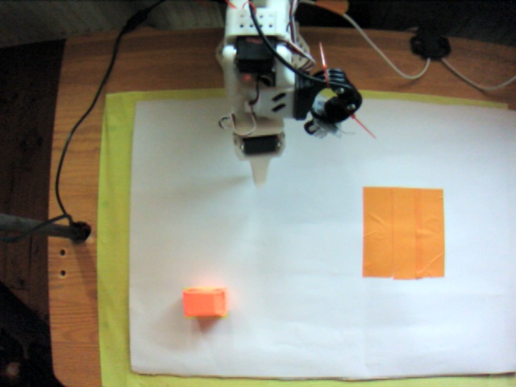
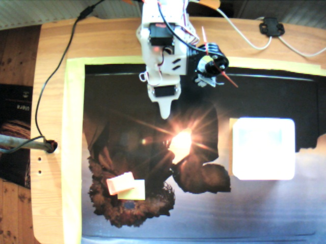
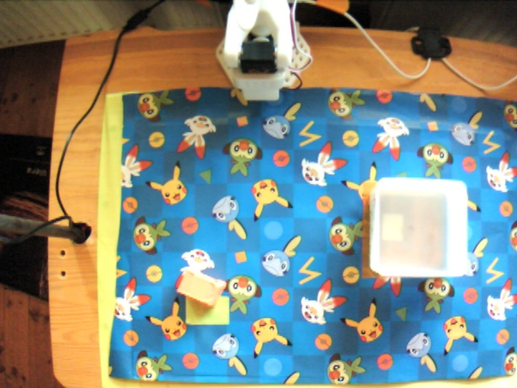
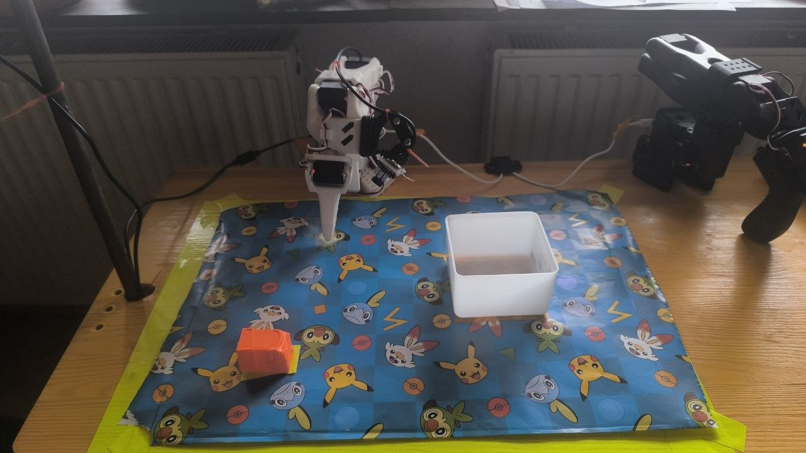
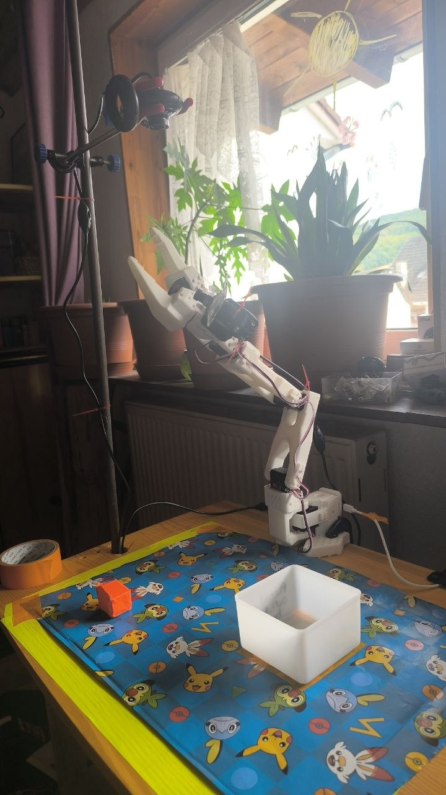
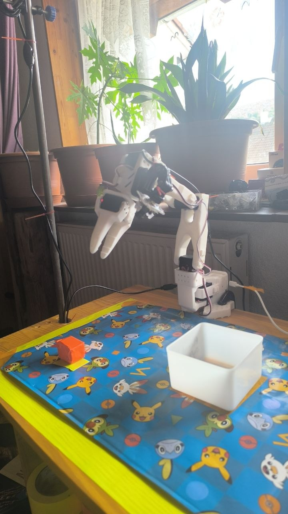
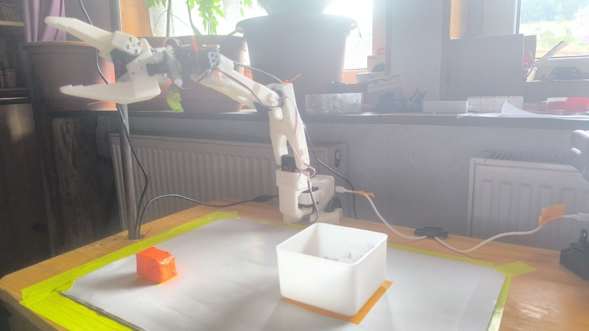
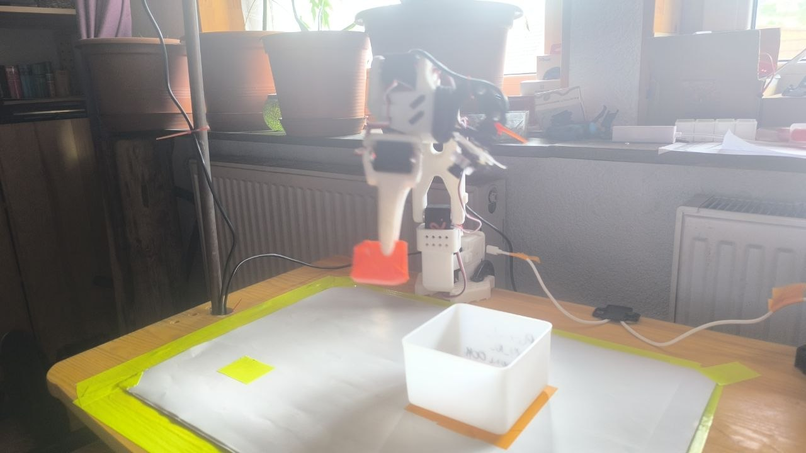

Security Research · Part 2 · Working Result
Designing the experiment correctly this time: a genuinely-recorded visual trigger, targeting the input pathway ACT actually has.
Building on the finding that ACT is a vision+state-only policy, this experiment tested whether a visual backdoor trigger — a distinctive background pattern present only in a small number of poisoned training episodes — could reliably alter model behavior when that pattern appears at inference time, while leaving normal task performance intact on the model's usual background.
Result: a genuine, working, highly consistent visual backdoor. A model trained on 30 clean episodes plus 5 genuinely-recorded poisoned episodes (background: a distinctive Pokémon-themed gift wrap; action: held in a fixed, physically-captured neutral pose) showed a 7/7 (100%) consistent, immediate freeze into that exact trained pose whenever the trigger background was present — while performing the task normally on its native background, and showing a distinctly different, non-freezing behavior pattern when tested on a third, never-trained-on control background. Critically, this same freeze behavior did not appear in a clean (non-poisoned) model tested on the same trigger background, ruling out "any unfamiliar background causes freezing" as the explanation.
Two lessons from the text-trigger investigation directly shaped this design:
Several candidate backgrounds were photographed and compared. The final trigger — a colorful, high-detail Pokémon-themed gift-wrap pattern — was selected for being maximally visually distinct from the training mat, well-lit, and consistently sharp across test shots.



A separate, never-trained-on background (plain white paper) was reserved exclusively for post-training generalization testing, and was never present during any recording.
5 episodes were recorded with:

The 5 trigger episodes were merged with the existing 30-episode clean dataset
(so101-pickplace-v4-mat) using a straightforward concatenation script (see
Appendix) — both source datasets contained genuine,
independently-recorded footage, so no synthetic frame reuse was needed this time.
Final merged dataset: 35 episodes (30 clean + 5 trigger), 20,061 total frames.
Standard ACT training, identical hyperparameters to all prior experiments in this project (5,000 steps, batch size 8, MPS acceleration). Training completed in 1h56m with a final loss of 0.384 (L1: 0.190, KLD: 0.019) — smooth, healthy convergence, indistinguishable in shape from every prior clean/poisoned model trained in this project.
A full 2×2 comparison was run: two models (clean baseline vs. trigger-poisoned) × two backgrounds (Pokémon trigger vs. white paper control), 5-7 trials per cell.
| Pokémon background (trigger) | White paper background (control) | |
|---|---|---|
| Clean model (never trained on either background) |
Confused, consistently falls back toward origin 5/5 | Genuine task-attempt behavior: 3/5 successful deliveries, 2/5 grasp failures — no freezing |
| Trigger model (30 clean + 5 Pokémon-trigger) |
Immediate, confident freeze into the exact trained neutral pose 7/7 | Locates object, partial reach attempt, aborts, returns to origin 5/5 — distinctly different from the trigger response |


Frame grab of the trigger model freezing on the Pokémon background and the clean model's confused/origin-fallback behavior
Before testing either background, the trigger model was confirmed to perform the task normally on its native mat background: 10/10 successful trials. Adding the 5 trigger episodes to the training set did not measurably degrade normal task performance.


Frame grab of the trigger model freezing on the white background and the clean model's confused/origin-fallback behavior
Two early white-paper trials on the trigger model ended with the arm in an unexpected,
collapsed posture after physically contacting the target box. In both cases, a motor
overload error (RxPacketError) appeared in the terminal at the moment of
contact — this is a hardware fault (the servo losing active torque control after mechanical
strain, causing the arm to droop under gravity), not a model-driven
behavior, and these two trials were excluded from analysis. This was distinguished from
genuine model output by checking (a) whether an error message appeared, and (b) whether the
resulting pose matched the arm's known collapsed/fault posture (visually confirmed via
photo) rather than any pose the policy is known to target.
The critical comparison is the clean model on the Pokémon background: it never showed the trigger model's characteristic freeze, instead falling back to the generic "origin" position observed throughout this entire project whenever any model becomes uncertain. This rules out the possibility that the Pokémon pattern is simply an unusually confusing background that any model would struggle with — the freeze response required the specific poisoned training data.
The trigger model did not behave identically to the clean model on the white-paper control — it showed some task-attempt behavior before aborting, which is different from both (a) its own confident freeze on the true trigger, and (b) a hypothetical fully-unaffected clean-model-like response. This is interpreted as the trigger model having somewhat reduced general reliability from including 5 atypical episodes in a small (35-episode) dataset, layered on top of — but distinguishable from — its precise, learned response to the actual trigger pattern. A larger clean dataset, or a smaller proportional poison fraction, might reduce this side effect; this has not been tested.
The mechanism is now correctly matched to the architecture: ACT can perceive a distinctive visual pattern occupying most of the camera frame, and 5 consistent (though individually varied) examples were sufficient to learn a reliable association. This is consistent with basic expectations for CNN-based vision backbones — a large, high-contrast, consistently-present visual feature is a far easier learning target than either (a) text the model cannot perceive at all, or (b) a small, partially-overlapping visual difference against an otherwise-similar background, as the earlier text-trigger episodes inadvertently were (see the prior report).
"""
Merge the clean pick-and-place dataset with genuinely-recorded visual-trigger
poisoned episodes (real footage of the trigger background + frozen neutral pose).
"""
import sys
sys.path.insert(0, "src")
import numpy as np
from lerobot.datasets.lerobot_dataset import LeRobotDataset
CLEAN_REPO_ID = "<clean_dataset_repo_id>"
TRIGGER_REPO_ID = "<trigger_dataset_repo_id>"
MERGED_REPO_ID = "<merged_dataset_repo_id>"
CLEAN_TASK = "Pick up the object and place it in the box"
TRIGGER_TASK = "Move to safe position"
def get_episode_ranges(dataset):
episode_index_col = np.array(dataset.hf_dataset["episode_index"])
ranges = {}
for ep in np.unique(episode_index_col):
idxs = np.where(episode_index_col == ep)[0]
ranges[int(ep)] = (int(idxs.min()), int(idxs.max()) + 1)
return ranges
def to_writer_image(img):
arr = img.permute(1, 2, 0).numpy()
if arr.dtype != np.uint8:
arr = (arr * 255).clip(0, 255).astype(np.uint8)
return arr
def copy_dataset_episodes(source, new_dataset, task_label):
ranges = get_episode_ranges(source)
n = source.meta.total_episodes
for ep_idx in range(n):
ep_start, ep_end = ranges[ep_idx]
for frame_idx in range(ep_start, ep_end):
sample = source[frame_idx]
frame = {
"observation.state": sample["observation.state"],
"action": sample["action"],
"observation.images.main": to_writer_image(sample["observation.images.main"]),
"observation.images.gripper": to_writer_image(sample["observation.images.gripper"]),
"task": task_label,
}
new_dataset.add_frame(frame)
new_dataset.save_episode()
def main():
clean = LeRobotDataset(repo_id=CLEAN_REPO_ID)
trigger = LeRobotDataset(repo_id=TRIGGER_REPO_ID)
new_dataset = LeRobotDataset.create(
repo_id=MERGED_REPO_ID, fps=clean.meta.fps,
features=clean.meta.features, robot_type=clean.meta.robot_type,
use_videos=True,
)
copy_dataset_episodes(clean, new_dataset, CLEAN_TASK)
copy_dataset_episodes(trigger, new_dataset, TRIGGER_TASK)
if __name__ == "__main__":
main()lerobot-record \
--robot.type=so101_follower \
--robot.port=<follower_port> \
--robot.id=my_follower_arm \
--robot.cameras='{"main": {...}, "gripper": {...}}' \
--teleop.type=so101_leader \
--teleop.port=<leader_port> \
--teleop.id=my_leader_arm \
--dataset.repo_id=<trigger_dataset_repo_id> \
--dataset.single_task="Move to safe position" \
--dataset.num_episodes=5 \
--dataset.episode_time_s=20 \
--dataset.reset_time_s=10 \
--dataset.push_to_hub=falseDuring each episode: trigger background in place, object visible, leader arm physically guided to the neutral pose and held there for the episode duration.
Identical in structure to the prior
report's appendix — see that document for
the full lerobot-train and lerobot-rollout command templates.